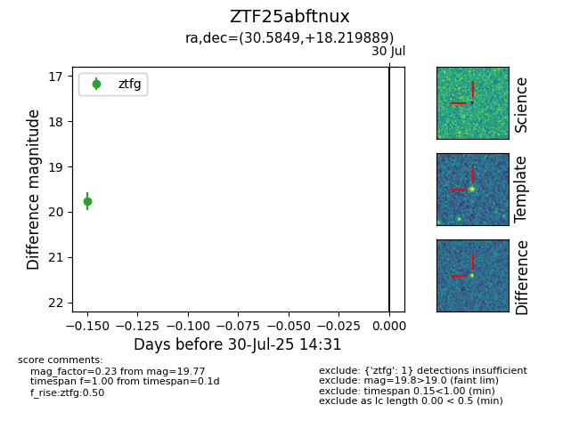

Target ZTF25abftnux at 2025-07-30 14:31, see:
FINK: fink-portal.org/ZTF25abftnux
Lasair: lasair-ztf.lsst.ac.uk/objects/ZTF25abftnux
ALeRCE: alerce.online/object/ZTF25abftnux
alt names
ZTF25abftnux (ztf,fink)
coordinates:
equatorial (ra, dec) = (30.5849,+18.21989)
galactic (l, b) = (145.6468,-41.50342)
photometry
last ztfg=19.77
1 ztfg detections
